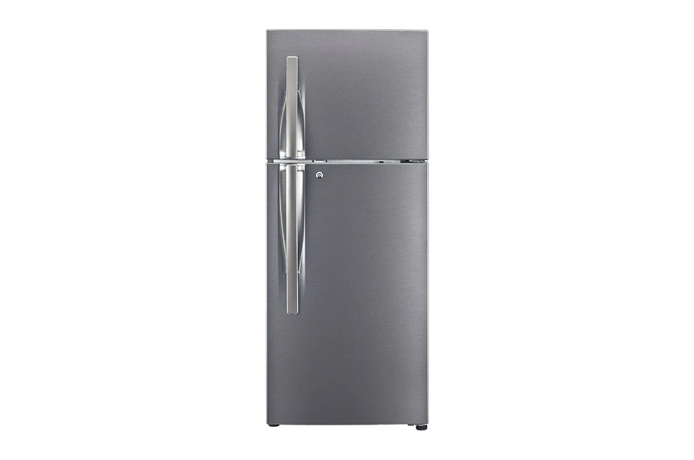

Monitors voltage, current, power, energy in real-time
Data sent via WiFi to Tuya cloud (Smart Life app)
Rated: 63A / up to 13kW (safety beyond fridge load) | BDT 2,400
Easy dashboard integration, robust for learning & savings
Installation
Professionally wired on fridge line for full-cycle monitoring.
Platform
Tuya Smart Life App tracks and visualizes energy instantly.
Data Export
Used Tuya Developer portal to extract CSV file for dashboard.

Monitored Appliance: Refrigerator
(Model: GL-G252RLBB) The household refrigerator runs 24/7, with high start-up and cycling consumption. It is a key candidate for practical energy saving and green computing projects.